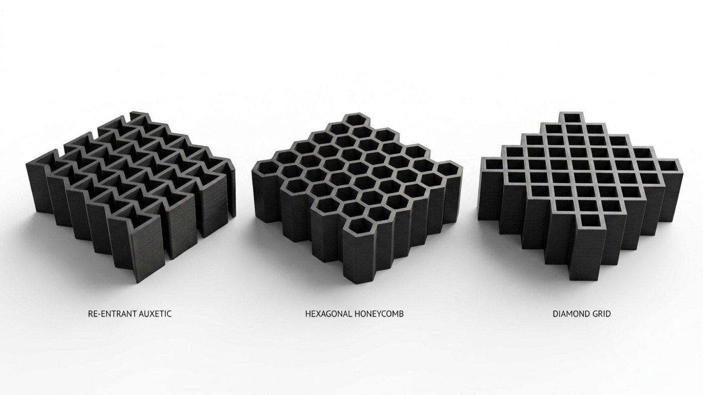
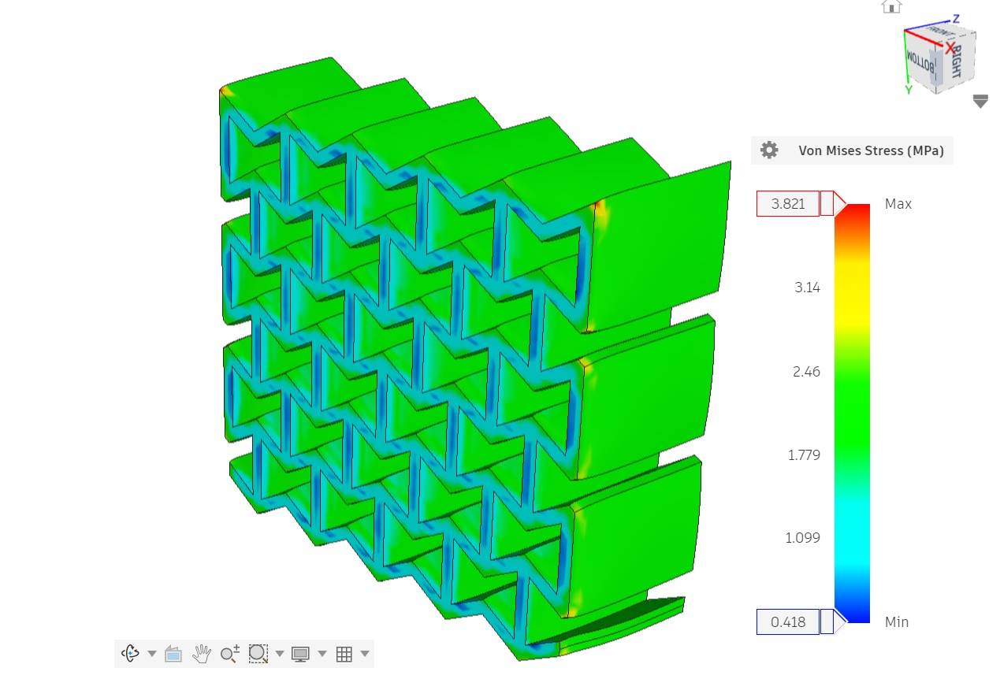
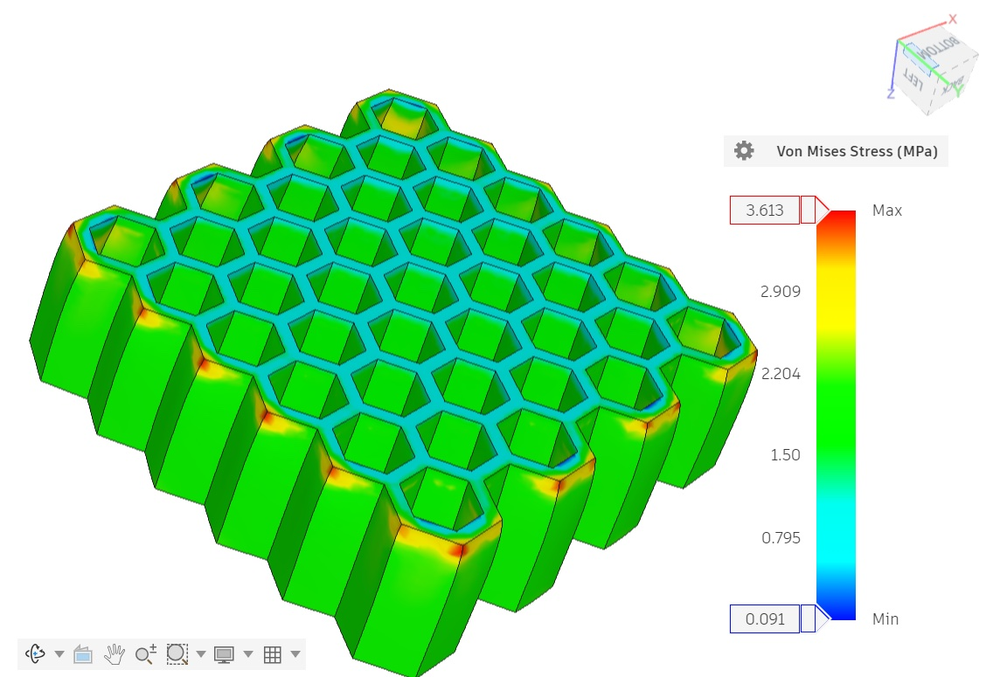
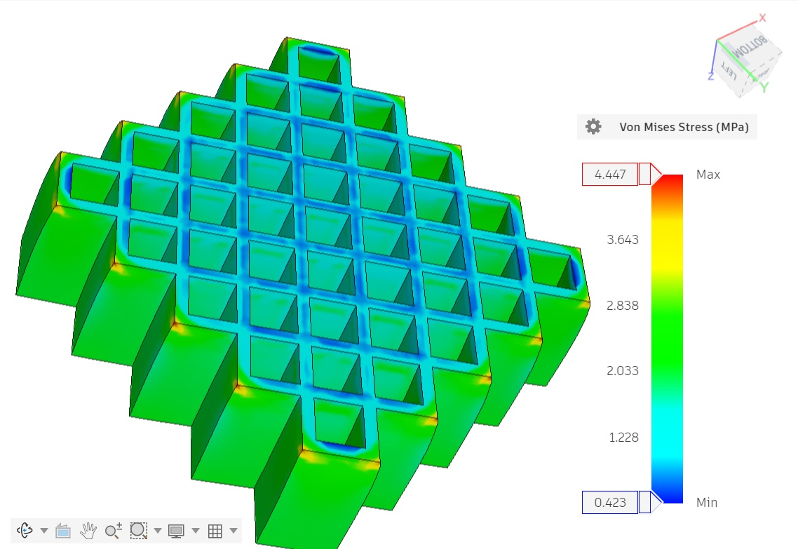

Running-shoe midsole for 3D printing: lattice FEA and DfAM

- Compared three TPU midsole lattices (re-entrant auxetic, hexagonal honeycomb and diamond grid) under a 2,000 N heel-strike load, the peak for an 80 kg runner.
- Ran static stress analysis in Fusion 360. All three designs came out more than 60% lighter than a solid 60 g TPU block, with the honeycomb and diamond grid at 61.2%.
- The honeycomb absorbed the most energy for its weight (63.19 J/kg). The auxetic design was stiffest (1,416 N/mm).
- Ran a mesh convergence study at 3.0, 1.5 and 1.0 mm and chose 1.5 mm. The finest mesh mainly chased the stress spike at sharp internal corners, so the next CAD version adds 0.5 mm fillets.
- Designed for printing (DfAM): vertical walls so no supports are needed, and 1.5 mm walls that match 3 to 4 passes of a 0.4 mm nozzle. Sliced each design at about 5 hours and 26 g of TPU.


